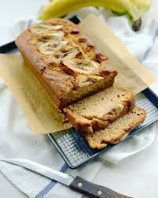

Banana Bread

An amazing easy to follow banana bread recipe
This banana bread is the perfect partner to a hot cup of coffee or tea
Ingredients
- 3 ripe bananas, mashed
- 1 cup white sugar
- 1 egg
- 1 ½ cups all-purpose flour
- 1 teaspoon of baking soda
- 1 teaspoon of salt
Steps
- Preheat oven to 325 degrees F (165 degrees C). Grease a 9x5-inch loaf pan.
- Combine bananas, sugar, egg, and butter together in a bowl. Mix flour and baking soda together in a separate bowl;
stir into banana mixture until batter is just mixed. Stir salt into batter. Pour batter into the prepared loaf pan.
- Bake in the preheated oven until a toothpick inserted in the center of the bread comes out clean, about 1 hour.